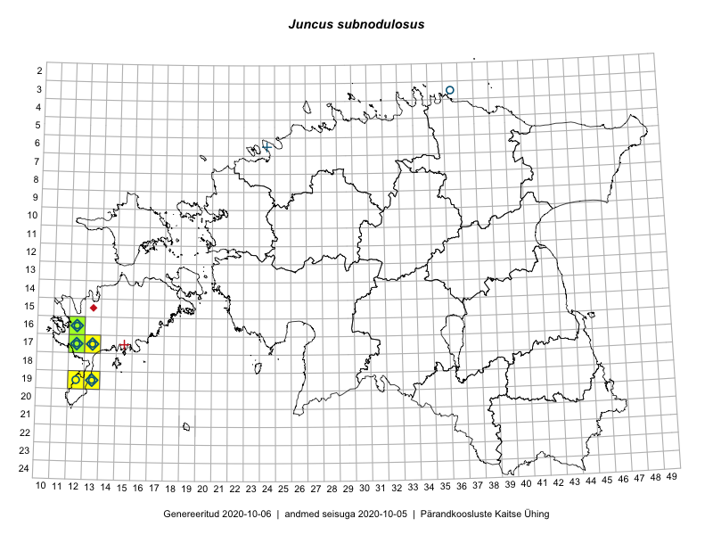

Juncus subnodulosus
Uuendatud: 2016-12-01
Kaardile koondatud taksonid: Juncus subnodulosus Schrank

Kaart põhineb 15 kirjel, neist vaatlusi 14 ja eksemplare 1.
Viited andmebaasikirjetele
- Oliver Parrest: 2015-07-01: 19-13: ala
- Mari Reitalu: 2015-08-13: 17-12: ala
- Mari Reitalu: 2015-08-11: 17-12: ala
- Mari Reitalu: 2015-08-11: 17-12: GPS punkt
- Mari Reitalu: 2015-07-02: 17-12: ala
- Mari Reitalu: 2015-07-02: 17-12: GPS punkt
- Mari Reitalu: 2015-08-23: 16-12: ala
- Mari Reitalu: 2015-08-23: 16-12: GPS punkt
- Mari Reitalu: 2015-09-03: 16-12: ala
- Mari Reitalu: 2015-09-03: 16-12: GPS punkt
- Mari Reitalu, Oliver Parrest: 2015-08-12: 17-13: ala
- Oliver Parrest: 2015-07-01: 19-13: GPS punkt
- Peedu Saar, Ott Luuk: 2016-10-07: 19-12: GPS punkt
- Ott Luuk, Peedu Saar: 2016-10-07: 19-12: ala
- Peedu Saar: 2015-07-01: 17-12: GPS punkt